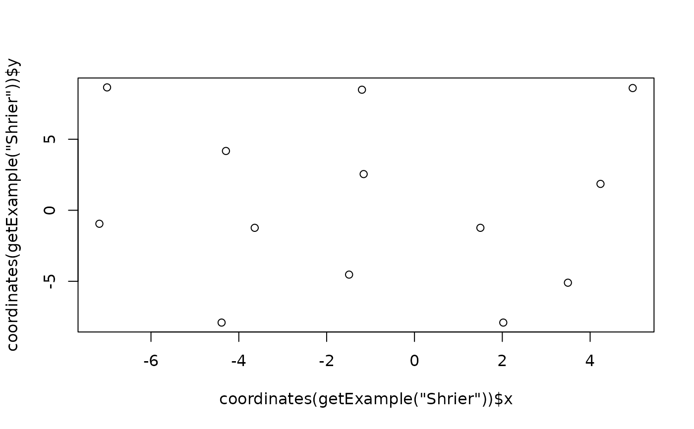
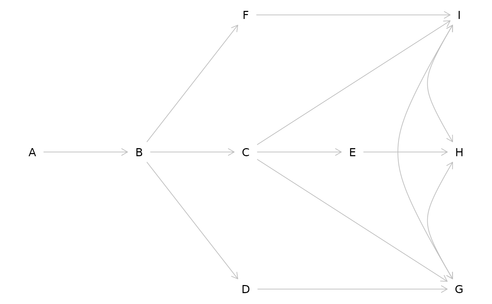

The DAGitty syntax allows specification of plot coordinates for each variable in a
graph. This function extracts these plot coordinates from the graph description in a
dagitty object. Note that the coordinate system is undefined, typically one
needs to compute the bounding box before plotting the graph.
Arguments
- x
the input graph, of any type.
- value
a list with components
xandy, giving relative coordinates for each variable. This format is suitable forxy.coords.
See also
Function graphLayout for automtically generating layout coordinates, and function plot.dagitty for plotting graphs.
Examples
## Plot localization of each node in the Shrier example
plot( coordinates( getExample("Shrier") ) )

## Define a graph and set coordinates afterwards
x <- dagitty('dag{
G <-> H <-> I <-> G
D <- B -> C -> I <- F <- B <- A
H <- E <- C -> G <- D
}')
coordinates( x ) <-
list( x=c(A=1, B=2, D=3, C=3, F=3, E=4, G=5, H=5, I=5),
y=c(A=0, B=0, D=1, C=0, F=-1, E=0, G=1, H=0, I=-1) )
plot( x )
